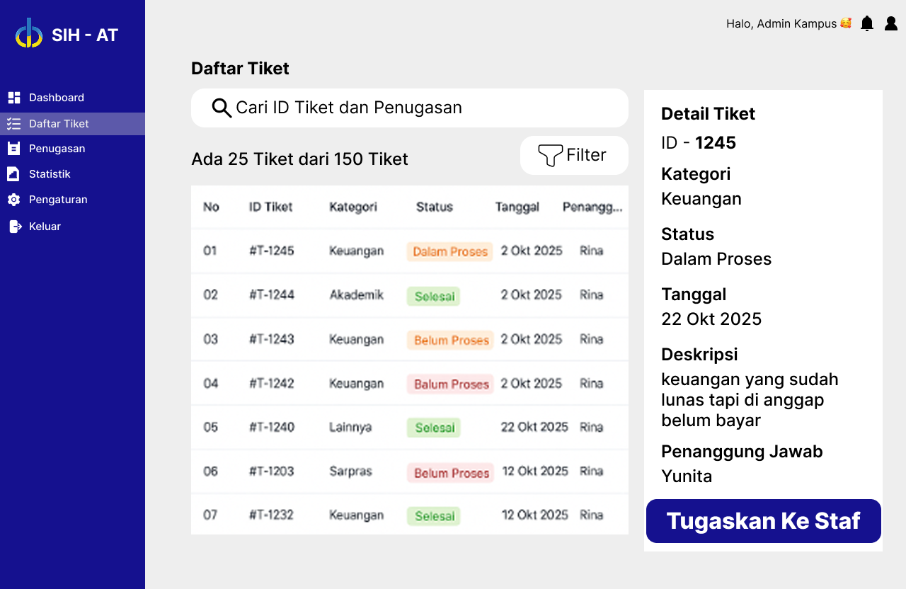
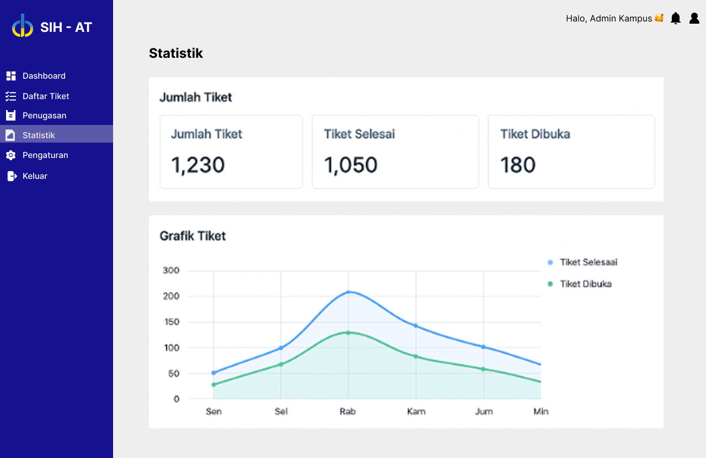
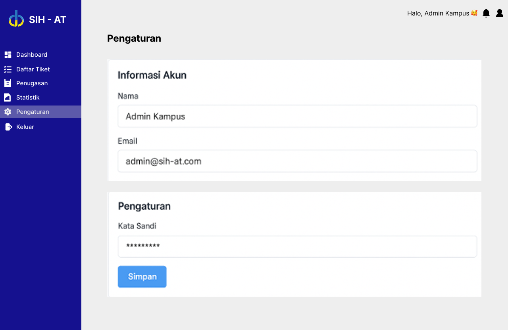
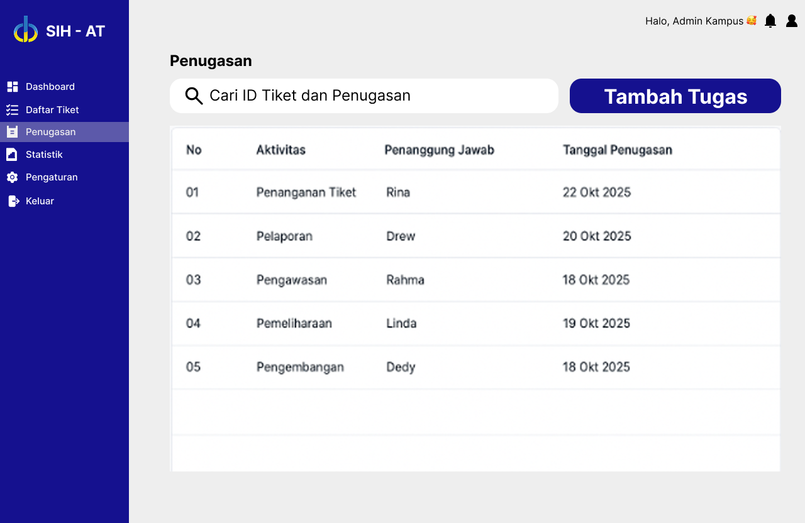
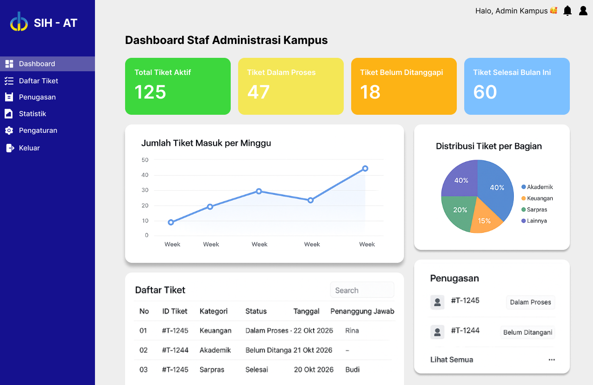
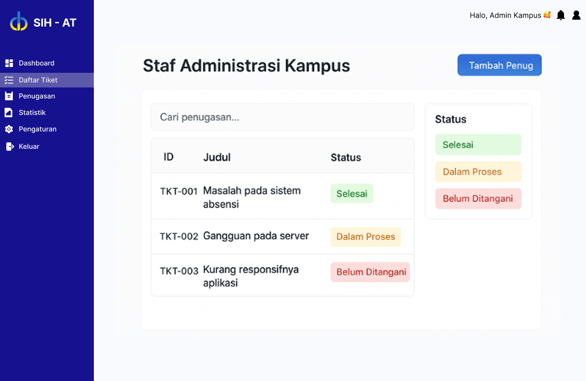

ALFARIZI SIDIQ
NIM 222611001 - Kelas DB NR 7
Inilah Hasil Project Design Thinking Tentang Suatu Manajemen Untuk Pengaduan Antar Mahasiswa dan Pihak Kampus Supaya Tidak MISKOM.
✨ Visualisasi 25 Desain Antarmuka Pilihan
-

- UX 1: Penggunaan tombol "Tugaskan ke Staf" sebagai Call to Action (CTA) yang jelas untuk aksi selanjutnya.
- UX 2: Status tiket menggunakan warna (Merah, Kuning, Hijau) sesuai prinsip Color Semantics untuk urgensi.
- UX 3: Hierarki visual yang baik, memisahkan Detail Tiket dan Deskripsi secara jelas.
-

- UX 1: Desain login yang minimalis dan terpusat untuk mengurangi *cognitive load*.
- UX 2: Penggunaan label di atas kolom input yang selalu terlihat (*floating label*) untuk konteks.
- UX 3: Kontras tombol Login yang tinggi (gelap) untuk memandu pengguna ke aksi utama.
-

- UX 1: Grafik Garis (Line Chart) digunakan untuk menampilkan tren, sesuai dengan prinsip Data Visualization.
- UX 2: Kartu statistik di atas (Jumlah Tiket, Tiket Selesai, Tiket Dibuka) menggunakan ukuran yang besar agar mudah dilihat (*glanceable*).
- UX 3: Penempatan navigasi (Informasi Rikan, Pengaturan, Penugasan) konsisten di sisi kanan atas.
-

- UX 1: Penggunaan *Sidebar Navigation* yang ringkas dan *collapsible* (dapat dilipat) untuk menghemat ruang layar.
- UX 2: Ikonografi yang jelas (misalnya ikon orang untuk Staf, ikon *checklist* untuk Tugas) membantu pemahaman cepat.
- UX 3: Tata letak kartu (Staf Administrasi, Tugas Baru) yang membagi informasi menjadi *chunk* yang mudah diproses.
-

- UX 1: Warna Biru tua (Navy) sebagai warna primer memberikan kesan profesional, terpercaya, dan bersih.
- UX 2: Struktur 5x5 grid (di tampilan galeri) membantu pengguna memindai 25 desain dengan cepat (Prinsip Hick's Law).
- UX 3: Pemisahan jelas antara Header (judul, biodata) dan Konten Utama (galeri/form) dengan garis pemisah (`
`).
-

- UX 1: Penggunaan tabel yang responsif untuk Daftar Tiket agar mudah diakses di berbagai ukuran layar.
- UX 2: Fitur Filter dan